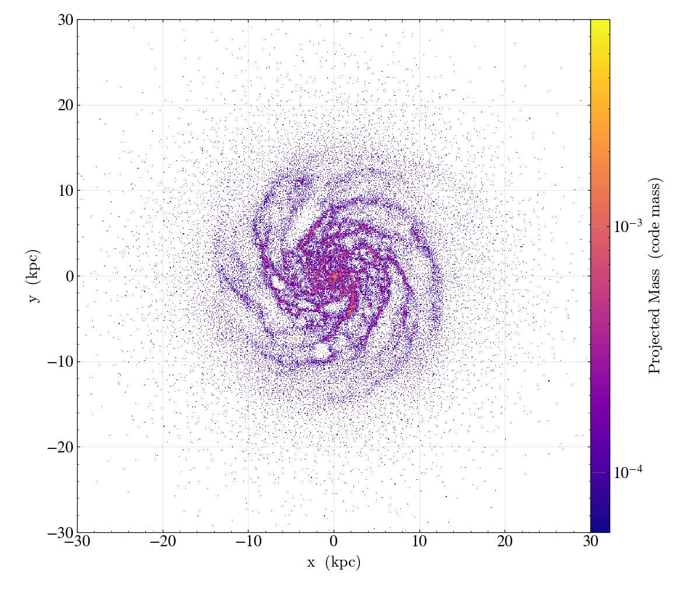
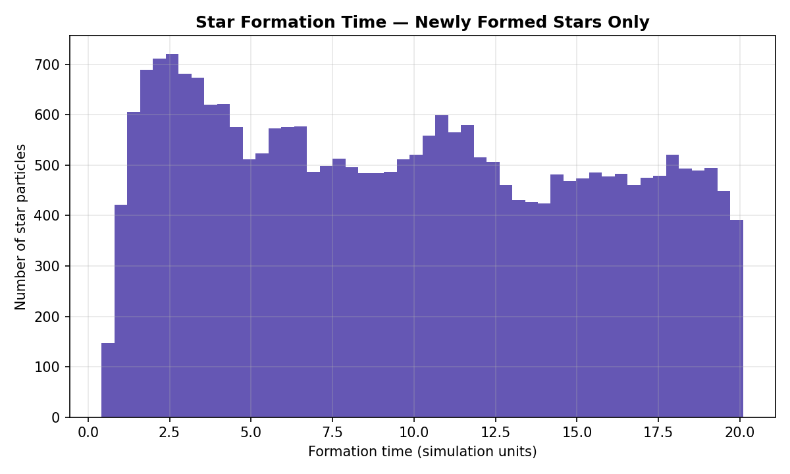
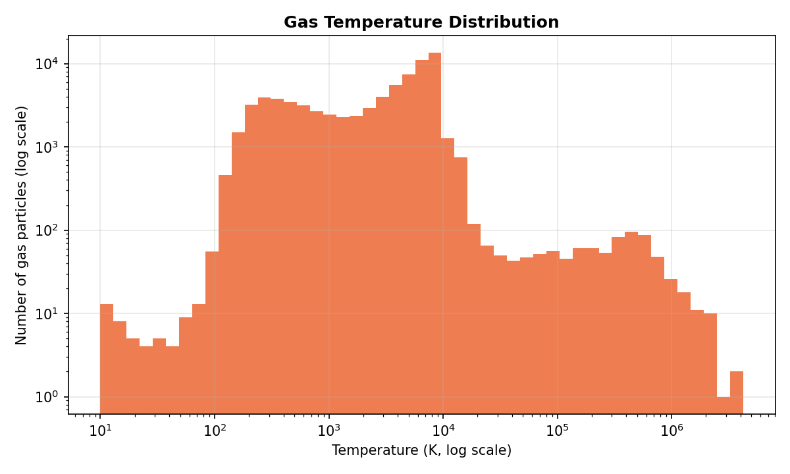
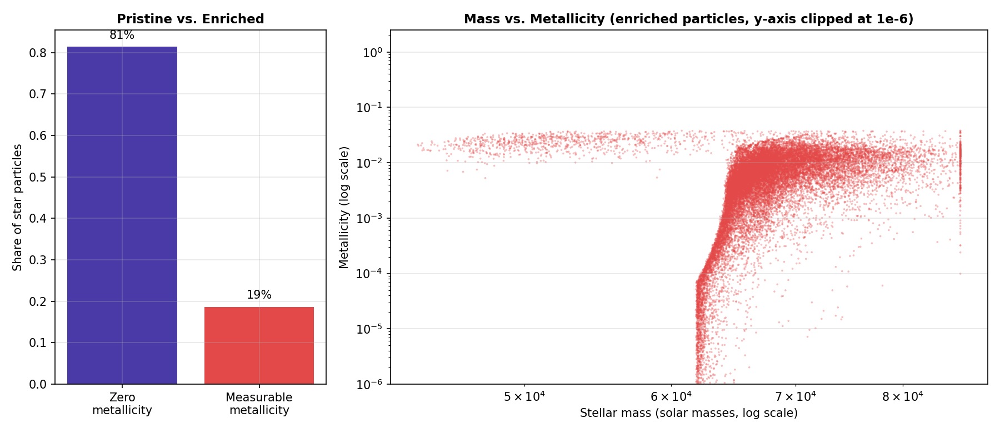

The numbers
Why this exists
A portfolio full of customer churn, retail sales, and job postings makes a specific kind of analyst look believable. It says nothing about whether the underlying skill — deciding what chart a question actually needs, and not shipping a chart that quietly misrepresents the data — generalizes. This project tests that directly: astrophysics simulation output, a genuinely unfamiliar data domain, same standards applied.
Data & tooling
TipsyGalaxy —
a sample N-body/SPH galaxy formation snapshot from the
yt-project data archive, analyzed
with yt, a Python library purpose-built for astrophysical
simulation data (particle fields, spatial projection, unit-aware
physical quantities) rather than a general dataframe tool. One frozen
snapshot: 315,372 particles — 76,962 gas, 138,410 star, 100,000 dark
matter — at simulated time 20.1 (code units).
Spatial structure: zoom matters

A histogram can't show this. Spiral structure is only visible once the plot is actually centered and scaled to where the galaxy is, rather than the full (mostly empty) simulation domain.
"Most stars form in the future" — investigating rather than assuming
ds.current_time.in_units(field.units)) rather than
guessing — both fields are genuinely in the same units, so it isn't a
conversion bug. What it actually is: those 112,508 particles all share
the exact same value (6706.9, ~330× past the snapshot's
current time) — the signature of a sentinel flag marking
"pre-existing initial-condition star," not a real measurement. Only
the remaining 25,902 particles (19%) actually formed during the
simulated window.

Among the stars that did form during the run, formation is heaviest early and continues at a roughly steady, noisy rate — consistent with an actively star-forming galaxy, not a single formation burst.
Gas temperature: two axes need scale transforms

Most gas mass sits in a cool, dense population (~10³–10⁴ K — the galactic disk), with a long tail of progressively hotter, rarer gas: shocked or diffuse gas heated by stellar feedback and gravitational compression.
A metallicity plot that blew up to 10⁻³⁵

1e-35 — unreadable. ~81% of star particles have exactly
zero recorded metallicity (a pristine population, separate from the
formation-time sentinel above), and among the rest, values form a
smooth continuum down to floating-point noise rather than a clean
signal/noise split — so there's no principled place to draw a data
cutoff. The fix is clipping the axis display range and saying
so directly in the title, not filtering the data further or hiding
the noise silently.
Among enriched stars, metallicity rises with stellar mass and converges toward ~0.01–0.04 at higher masses — consistent with more massive stars forming later, from gas already enriched by earlier generations.